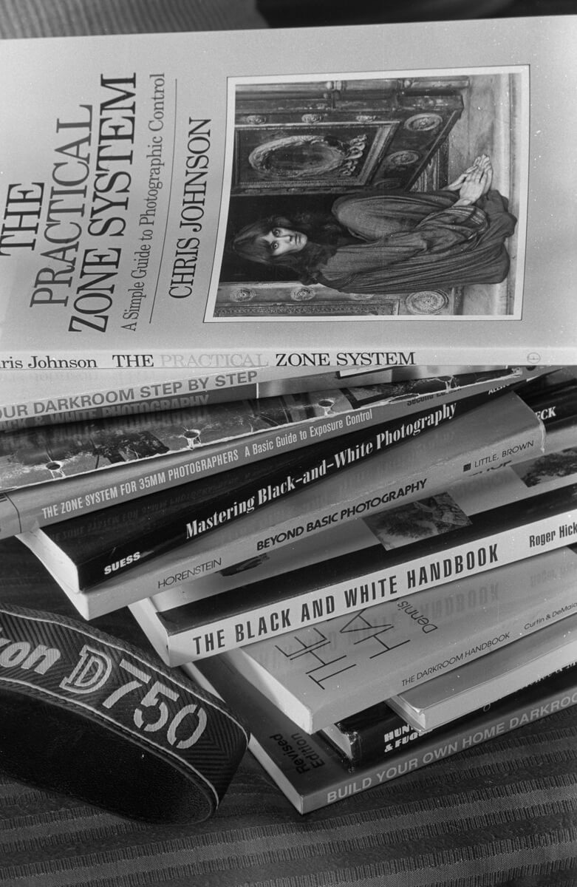

柯达的胶卷涨疯了也想多卖：英国先降 12%，T-Max 悄悄改了名
柯达 2026 年二季报里有一句官方原话，直白得不像公关稿：「对消费级胶片产品的需求上升，加上制造设备限制和人工短缺，已经导致积压订单（backorders）增加。」 而就在同一批季度数据里，胶片与化学品业务的营收是 1.34 亿美元，比去年同期多出 1,500 万美元。 然后是本篇的反差点：同一家柯达，在英国的新胶片便宜了大约两成。 伦敦的 Aperture Printing 说，新款柯达 Gold 200 的 36 张装卖 10 英镑，比旧版便宜 2 英镑；21 Studio Photolab 的 120 规格五卷装，从 51 英镑降到 39.99 英镑——降幅 21.6%。
| 同一件事的两面 | 官方数据 | 对玩家意味着什么 |
|---|---|---|
| 柯达说需求太旺 | 消费级胶片需求上升，叠加设备与人工缺口 → 积压订单增加（财报原话） | 想买的卷可能缺货或要等，尤其是高感与专业线 |
| 柯达说在收定价 | 胶片与化学品营收同比 +1,500 万美元；其中提价贡献 1,400 万、销量贡献 1,400 万 | 官方端价格在往上走，别指望全球一起降 |
| 英国却便宜了两成 | 新直供线出厂价下调，多数胶片零售价最多便宜 20%（媒体实测口径） | 同款卷，不同地区价格可以差很多——比价是能省钱的 |
一、先把官方原话摆出来：能核实的与不能核实的
最容易写歪的地方，是把「财报里的数字」直接当成「零售价的答案」。先分级： ✅ 一手：柯达提交给美国证券交易委员会（SEC）的 2026 年二季报（10-Q，2026-08-04 提交），以及英国分销商 Dupli 的官方公告页——这些是厂商与分销商自己的说法，可以直接引。 ⚠️ 零售价：降价幅度来自媒体的零售实采 + 店家报价，不是柯达的官方定价表。柯达没有公布任何「官方降价公告」。 ❌ 查不到：柯达没有公布过「新老两条线是不是同一乳剂」，也没有公布具体的增幅百分比。凡是看到「配方一模一样」这种话，都不是官方说的。
柯达在财报里解释过为什么要自己出来卖：「2025 年第四季度，柯达推出了自己的直供分销商（direct-to-distributors）静止胶片产品线，目标是给分销商、零售商和消费者更稳定的价格，以及更广、更可靠的供应。」 而在英国接这条线的 Dupli 引述柯达的话更直接：「我们想对静止胶片市场的参与有更大的掌控，并为分销商、零售商和消费者提供更稳定的价格、更广也更可靠的供应。」 关键词是 direct-to-distributors——不经过原来的销售代理，直接给分销商。中间少一道，出厂价才有下调的空间。
二、最要紧的一件事：这三款黑白，改名了
名字这件事，比价格更容易踩坑。原因很简单：Kodak Alaris 手里握着几个商标，而 Eastman Kodak 想自己卖，就不能用别人的名字。 结果是：产品没停，名字换了。 下面这张表是能核实的清单。
| 老的（Kodak Alaris 时代） | 新的（Eastman Kodak 直供线） | 依据 |
|---|---|---|
| T-Max 100 | Ektapan 100 | 分销商官方 FAQ 明确写：Ektapan 是「equivalent specifications of TMAX」的专业黑白 |
| T-Max 400 | Ektapan 400 | 同上；官方描述为 ISO 100 / 400 / P3200 三档 |
| T-Max P3200 | Ektapan P3200 | 同上 |
| Portra 160 / 400 / 800 | Ektacolor Pro 160 / 400 / 800 | 分销商原文：Eastman Kodak 不持有 Portra 商标的使用权 |
| Gold 200 / UltraMax 400 / 柯达 200 | 同名保留 | 这几个名字本身在 Eastman 手上，所以外观变了、名字没变 |
| Tri-X 400 / Ektar 100 / Ektachrome E100 | 同名保留 | 分销商产品线里仍以原名出售 |
⚠️ 注意两个边界，别被带偏： 第一，「同规格」不等于「同乳剂」。 分销商自己在 FAQ 里就承认答不了这个问题——原话大意是：配方与工艺高度保密，我们永远不会真正知道，只能让摄影师自己对比测试。所以「换了名字但还是那卷」只是一种合理推测，不是结论。 第二，「改名」不等于「停供」。 有人看到新名字就以为老线要断货，分销商 FAQ 的答复很干脆：不会——只要两边都有需求，就会并存。
三、柯达没有告诉你的事：它其实很不缺买家
这才是本篇最值钱的一段。财报里关于胶片的那几句，比任何「胶片复兴」的新闻稿都硬： ① 需求已经顶到产能天花板。原文列了两条风险：需求上升 + 设备限制 + 人工短缺 → 积压订单增加；并且这种需求可能继续给制造设备和人力造成压力，除非追加投资或增聘关键岗位。 ② 涨价已经在发生。二季度胶片与化学品营收同比多出 1,500 万美元，其中「定价改善」贡献 1,400 万；上半年多出的 3,200 万里，提价贡献 2,000 万。同一个季度，白银成本上升又吃掉了 400 万美元。 ③ 产能是真金白银投下去的。财报写柯达「通过投资产品创新并显著提升制造产能」来做大胶片业务，2024 年重金改造了胶片制造能力。 ④ 电影片还在出新的。财报同时提到 KODAK VERITA 200D 彩色负片电影卷（5206/7206）的上市。 把四条连起来读，意思很清楚：柯达现在不是靠降价换销量，而是「产能拉满、订单排队、价格往上抬」。 英国那两成降价，是渠道打法，不是行情转向。

四、为什么只有英国降价：少了一道中间商
英国这条线有两个动作叠在一起。 动作一：Eastman Kodak 把销售权收回来了。 分销商在公告里把历史讲得很清楚：2013 年，Eastman Kodak 把胶片的销售与营销业务卖给了 Kodak Alaris，此后很长一段时间里，Eastman 只负责制造。现在它把销售拿回自己手上——而且两条线的胶片至今仍在纽约罗切斯特的同一个工厂生产。 动作二：接线的分销商拿到了更低的出厂价，而且愿意往下放。这就是零售价能降两成的直接原因。 ⚠️ 但别把「英国降价」推广成「全球降价」。媒体明确写了：在美国——也就是这些胶片的生产地——并没有出现同样的降价。中国这边也查不到柯达的官方降价公告。所以这条消息对国内读者的正确用法是看懂机制，不是等降价。
五、给你的六条（今天就能用）
六、一句话
当一家公司说自己不缺买家的时候，它降价的理由通常不在你这边，而在它的渠道那边。
数据口径
柯达官方数据取自 Kodak（Eastman Kodak Company，CIK 0000031235）提交 SEC 的 2026 年二季报 Form 10-Q（2026-08-04，报告期截至 2026-06-30），文中英文为原句，营收单位为美元、未做汇率换算。改名清单与「同规格」表述取自英国分销商 Dupli 的官方公告页《Dupli Becomes the UK Distributor for Eastman Kodak Film》（2026 年）；该页同时注明两条产品线仍在纽约罗切斯特同一工厂生产。英国零售价数据（Gold 200 由 12 英镑降至 10 英镑、120 五卷装由 51 英镑降至 39.99 英镑、「多数胶片最多便宜 20%」）来自媒体 Kosmo Foto 2026-09-01 的署名报道，属零售实采与店家报价，不是柯达官方定价公告。「美国未出现同等降价」为同一报道口径。 本站不替厂商补的几句话：「新老两条线是否为同一乳剂」无官方口径，本站只写「分销商称规格等同、配方保密」；「官方是否公布过增幅百分比」无官方数字，本站只列财报给出的金额贡献；柯达没有发布过英国降价的官方公告。文中样片取自本站收录的同厂黑白卷（T-Max 400 / T-Max 100 / T-Max P3200），只作影调参照，与本文涉及的包装或配方变更无关。
查这几卷的规格与实拍样片
T-Max 100（T-Max 线 · 约 ¥90–110） T-Max 400（T-Max 线 · 约 ¥90–110） T-Max P3200（T-Max 线 · 约 ¥95–115） Tri-X 400（没改名 · 约 ¥85–105） HP5 Plus（平替参照 · 约 ¥70–90） Kentmere 400（更便宜的替代 · 约 ¥45–60）
去胶卷库看看这几卷
「胶卷档案」是一个可搜索的胶卷资料库：每卷都有规格、特性、使用感受、参考价与实拍样片。搜品牌或型号就能直达。